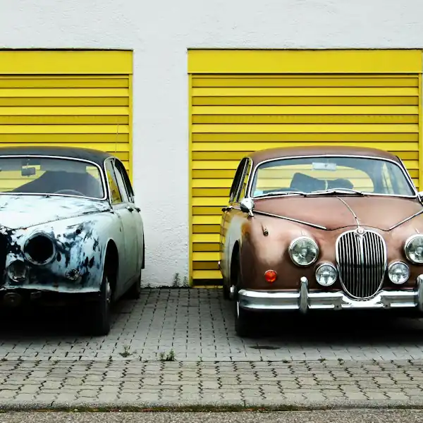

Available for projects from December
Mara Okafor
Design engineer - design systems, front-end architecture and accessibility
Eleven years between design and code. I build the systems product teams ship with, and I make them fast, accessible and calm to work in.
- Berlin, Germany - remote across Europe
- 11 years in product teams
- mara@example.com
Portfolio
Selected work
GitHub
Open Source
Design tokens as plain CSS custom properties - one file per theme, light and dark.
- CSS
- 2.4k stars
- 184 forks
Shows where keyboard focus went - a devtool overlay for accessibility reviews.
- TypeScript
- 812 stars
- 41 forks
Prints the kerning pairs of a font that a design system's sizes actually use.
- Rust
- 96 stars
Notes
Writing
Work
Design and engineering, 2022 to today.
All work
Museo Digital
A museum's collection online - eight thousand objects you can walk through like the rooms of the building.
- Client
- Lagos Museum of Art
- Year
- 2024
- Role
- Design lead
- Tools
- Figma, Eleventy
The brief
The museum had photographed its whole collection and put it in a spreadsheet. Visitors should find a mask the way they find it in the building - by room, by material, by the story next to it.
Deliverables
- Collection browser Web
- Object pages Web
- Room maps Illustration

Writing
Notes on design systems, accessibility and the work in between.
Eleven date pickers
The project behind it

Experience
-
Leads the design system fourteen product teams build with - components, tokens, documentation and the review of every change.
- Cut the system's CSS from 240 kB to 38 kB by moving variants to data attributes
- Took the product to WCAG 2.2 AA in nine months
-
Globex
Hamburg
- · 5 yrs, 2 mths
-
Senior front-end engineer
-
Rebuilt the research wiki's editor; led a team of four.
-
Front-end engineer
-
-
-
Interaction designer
Studio KollektivFreelance
- · 2 yrs, 9 mths
Remote
Apps and websites for cultural institutions - from the first sketch to the shipped front end.
Education
-
M.Sc. Human-Computer Interaction
TU Berlin
-
Thesis: how keyboard users find their way through dense data tables.
-
B.A. Communication Design
HTW Berlin
-
Skills
Engineering
-
5 / 5 -
5 / 5 -
4 / 5 -
2 / 5
Design
-
5 / 5 -
4 / 5 -
3 / 5
Languages
-
5 / 5 C2 -
4 / 5 C1 -
5 / 5 native